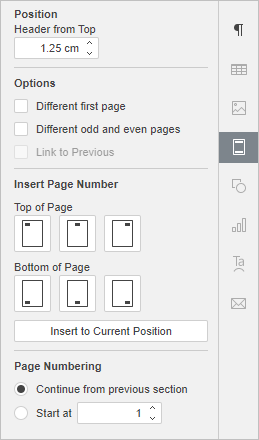
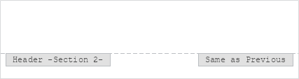

Umetanje zaglavlja i podnožja
Da biste dodali ili uklonili novo zaglavlje/podnožje ili izmenili već postojeće u Document Editor,
- prebacite se na Insert karticu u gornjem meniju,
- kliknite na ikonu Header/Footer u gornjem meniju,
- izaberite jednu od sledećih opcija:
- Edit Header za umetanje ili izmenu teksta zaglavlja.
- Edit Footer za umetanje ili izmenu teksta podnožja.
- Remove Header za brisanje zaglavlja.
- Remove Footer za brisanje podnožja.
- promenite trenutne parametre zaglavlja ili podnožja u desnoj bočnoj traci:

- Podesite Position teksta: na vrh za zaglavlja ili na dno za podnožja.
- Označite Different first page da primenite različito zaglavlje ili podnožje na prvoj stranici ili ako ne želite dodavati zaglavlje/podnožje na nju.
- Označite Different odd and even pages da dodate različita zaglavlja/podnožja za neparne i parne strane.
- Opcija Link to Previous je dostupna ako ste prethodno dodali sekcije u dokument. Ako ne, biće siva. Takođe, ova opcija nije dostupna za prvu sekciju (tj. kada je izabrano zaglavlje ili podnožje prve sekcije). Po defaultu je ova opcija uključena tako da se ista zaglavlja/podnožja primenjuju na sve sekcije. Ako izaberete zaglavlje ili podnožje, videćete oznaku Same as Previous. Isključite Link to PreviousSame as Previous više neće biti prikazana.

Da biste uneli tekst ili izmenili već uneseni tekst i prilagodili podešavanja zaglavlja ili podnožja, možete dvaput kliknuti bilo gde na gornjoj ili donjoj margini dokumenta ili kliknuti desnim tasterom miša i izabrati jedinu opciju iz menija - Edit Header ili Edit Footer.
Da se vratite u telo dokumenta, dvaput kliknite unutar radnog područja. Tekst koji koristite kao zaglavlje ili podnožje biće prikazan sivom bojom.
Napomena: pogledajte odeljak Umetanje brojeva stranica da biste saznali kako dodati brojeve stranica u dokument.